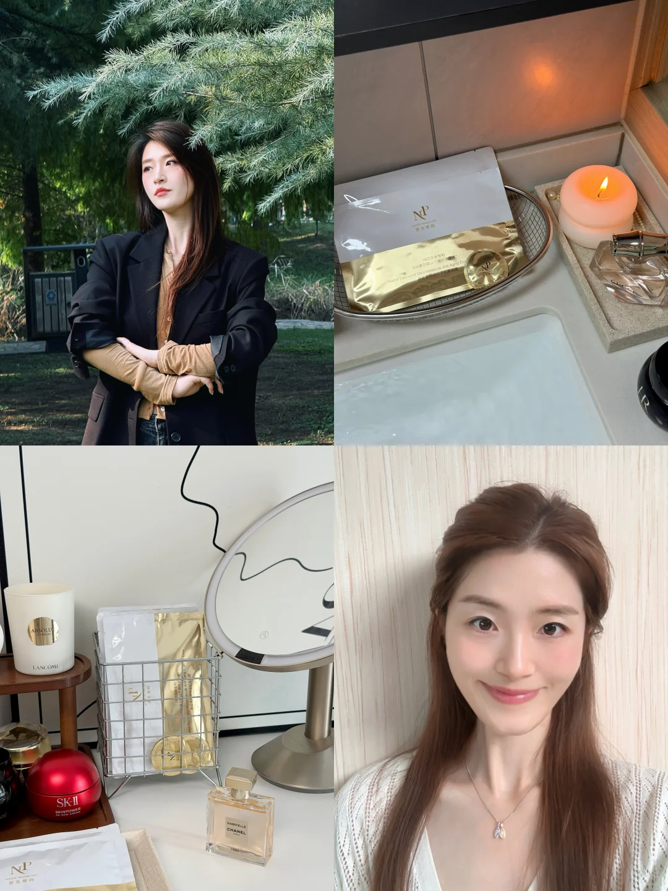

01 / 酷狗音乐 · 2019—2024
微博内容与用户增长
独立负责微博内容及粉丝活动，推动社媒到客户端的合作思路，与APP运营、产品及设计团队协同落地。
256万人次累计引流 · 21万名纯新增用户
独立负责微博内容及粉丝活动，推动社媒到客户端的合作思路，与APP运营、产品及设计团队协同落地。
256万人次累计引流 · 21万名纯新增用户管理2名新媒体专员；统筹抖音、小红书、视频号的内容方向和审核，并推进持续更新的音乐栏目。
蝰蛇音效 · 鹿晗话题 · 晚安电台
参与科普视频号的定位与早期选题，围绕30+女性、健康长寿和人物故事撰写原创视频脚本。
53条视频 · 3.1万+粉丝 · 60万+转发收藏
参与小红书达人选题、Brief、脚本与初稿审核；在新品项目中负责卖点提炼、海报及公众号文案。
达人笔记成品 · 产品内容案例
扫码或点击查看原图2022-11-23，时代少年团“三时有声”周年企划：发布微博同时给出网页链接及客户端搜索口令，降低路径不清造成的流失。
活动长图进一步说明第 66 / 666 / 1123 / 6666 名参与者的奖励规则。这是该期机制，不是所有发糖机的通用规则。
活动主题与参与逻辑、福利规则的内容呈现、微博文案、合作推进，以及与产品/设计团队协调上线。后续形成月度固定活动。
从熟悉的演唱会现场切入，展示音效与听歌场景的关系；负责选题、统筹和脚本审核。
1763 万演唱会音效合集累计播放 · 48 集围绕歌曲、音乐场景和音效征集组织互动；鹿晗直播票根活动用预约、截图、话题投稿与抽奖串联参与路径。
16.8 万鹿晗票根活动截图时点浏览量调整账号定位，从纯音乐内容延伸至音乐内容＋产品功能；文章后段接设置方法、功能和收听入口。
10 万+代表文章历史阅读量每期以 3 分钟内音频组织听觉体验；根据艺人及歌曲调整主题表达。历史策划方案按周二/周四 22:30 排期。
我负责栏目整体策划、主题内容及站外推广；版权团队协调艺人录制，电台团队配合站内内容分发。
把“普通妈妈”和“亿万富豪”并列，利用身份与年龄差异形成好奇：普通人可以借鉴哪些生活习惯？
开头交代人物反差，再按具体生活习惯分段；让复杂的长寿话题变成可理解的几个动作。
画面上方通过短标题提示接下来讲什么，用户回看和查找某一部分时更方便。